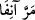
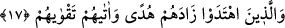

münafıklardır. Bu münafıklar Peygamberimiz (s.a.)’in meclisine gelir, onun sözünü
dinler, ancak dinlediklerini kavramadıkları, duyduklarını küçümseyip önemsemedikleri
için gereğini yapmazlardı. Sadece alaycı bir şekilde “Şimdi Peygamber ne söyledi? Biz
onun sözünü anlamadık” derlerdi.
(ânifa) ifâdesi, Arapların geçen bir şey için
(enefe’ş-şey’ü) sözlerinden
alınmıştır. “Enf” burun demektir. Kelime, bu organdan alınıp mecâzen böyle kullanılır.
Râğıb şöyle demiştir:
(iste’neftü’ş-şey’e) demek, “onun burnunu yâni
mebde’ ve başlangıcını aldım” demektir. Âyetteki “ânifa” sözü de bu kabildendir. Yâni
“demin, başlangıçta, az önce” demektir. Bazıları, ânif kelimesinin saat olarak tefsir
edilmesinin, bu kelimenin hâl zarfı olduğuna delâlet ettiğini söylemişlerdir. Fakat
Keşşâf sahibi Cârullah Zemahşeri’nin de dediği gibi ânif kelimesi senin içinde
bulunduğun zamandan önceki zamanın ismidir.
Kamus’ta şöyle denilmektedir. Ânif, sâhib ve ketif kelimeleri gibidir. Hatta sâhiba ve
ketifa diye de okunmuştur. Yâni “şu zamandan bize yakın olan zamanın başlangıcından
beri” demektir. Bu izahla bu konuda bazılarının yapmış olduğu itiraz da bertaraf edilmiş
oldu. Çünkü bu gibi makamlarda saat kelimesi hazır olan vakte hamledilmez. Ancak
saat kelimesinden Kamus sahibinin tefsirindeki mânâ murâd edilir. İşte bu mânâdan
yola çıkarak bazıları
(merra ânifa) yâni “az önce uğradı yahut şu saat uğradı”
demişlerdir. Yâni sen “şu saat” desen bile yine mânâ “az önce” demek olur. Bunun
böyle olduğunu bilmek gerekir.
“Onlar Allah’ın kalblerini mühürlediği, keyiflerinin ardına düşmüş kimselerdir.”
Bu mânâda mühür vurana da tâbi’ denilmiştir. Râğıb şöyle der: Tab‘, bir şeyin herhangi
bir surette tasvir edilmesidir. Para kalıbının ve paranın basılması bu kabildendir.
Tab‘ etme işi mühür vurmaktan umûmî, nakşetmekten husûsîdir. Tab‘ ve hatim,
kendisiyle baskı ve mühür vurulan şeydir. Tâbi‘ ise bunu yapandır.
17. Hidâyet bulanlara gelince, Allah onların hidâyetlerini artırmış ve onlara
korunmalarını (kendilerini kötü sonuçtan koruma çareleri) vermiştir.
Hak yoluna “Hidâyet bulanlara” müminlere “gelince, Allah onların hidâyetlerini
artırmış” başarı ve ilhamla onlarda takvâyı yaratmış “ve onlara korunmalarını
vermiş” sakınarak takvâyı elde edecekleri şeyleri onlara beyân etmiş“tir.”
İbn Atâ (k.s.) şöyle demiştir: Hidâyet isteklerinde gerçekçi olanları biz hidâyet
makamına ulaştırıp Hâdî olan Allah’a ulaşmadaki hidâyetlerini artırdık.